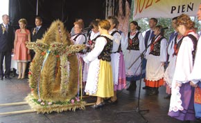

zarowianie.republika.pl
Witamy na stronie o ¯arówce i regionie
Welcom to site of village Zarowka and countryside
)

 Rolnicy podziêkowali za plony
Rolnicy podziêkowali za plony
¼ród³o: Korso 03.09.2009.
Tegoroczne do¿ynki gminy Radomy¶l Wielki odby³y siê 23 sierpnia w Pniu, a gminy Padew Narodowa w Wojkowie.

PIEÑ. Pocz±tki miejscowo¶ci Pieñ siêgaj± XVI wieku, kiedy to za³o¿ona ona zosta³a przy tzw. trakcie krakowskim. Od pocz±tku swego istnienia, poprzez parafiê, zwi±zana jest ze Zgórskiem. Obecnie Pieñ to najmniejsza miejscowo¶æ w gminie, zamieszkuje j± ok. 360 osób. So³tysem jest Barbara Cabaj – Lonczak.
Gminne ¦wiêto Plonów powróci³o do Pnia po ponad æwieræwieczu. Tradycyjnie rozpoczê³o siê od mszy ¶wiêtej w intencji rolników, celebrowanej przez ksiêdza dziekana Stanis³awa Niemca. Po dziêkczynieniu korowód wieñcowy z kapel± ludow± „Radomy¶lanie” na czele, przemaszerowa³ na plac do¿ynkowy, gdzie odby³a siê dalsza czê¶æ uroczysto¶ci. Jej gospodarzem by³ Jan Miêko¶, radny z obwodu Pieñ – Zgórsko i przewodnicz±cy Rady Miejskiej, za¶ starostami Anna Padyku³a i Zenon Lonczak, którzy witali parlamentarzystów, gminnych i powiatowych samorz±dowców oraz licznie przyby³ych mieszkañców gminy. Podczas obrzêdu do¿ynkowego obtañczono i o¶piewano 20 wieñców z 12 miejscowo¶ci gminy (zabrak³o tylko przedstawicieli Podborza), które wziê³y udzia³ w gminnym przegl±dzie. Wykonawczynie najlepszych wieñców otrzyma³y nagrody pieniê¿ne w kwocie 600 z³otych. Pó¼niej na scenie, zakupionej ze ¶rodków Ministerstwa Kultury i Dziedzictwa Narodowego, zebranych go¶ci bawi³a „Biesiada” z Krakowa i zespó³ „Alamba Band”.
kris